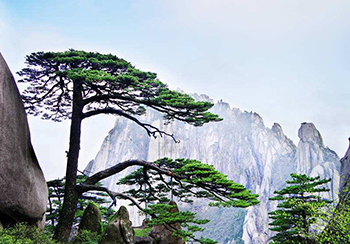
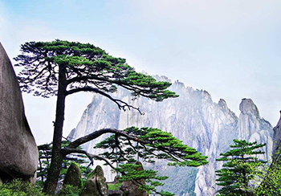

2018年黄山自助旅游特别攻略
发表于- 共有 - 1 评论
随着西海大峡谷和天都峰的开放，黄山旅游也进入了旺季。想在一天时间内玩好黄山（尤其是一天内穿越西海大峡谷再登天都峰）实在是不太可能的，时间和体力都够呛。想住宿山上但山上住宿价格太高，2017年价格调整后山上酒店住宿费用大幅提高，而且住宿环境很一般，山上饭菜贵且不一定合胃口。有什么好办法吗？很多游客可能不知道，黄山门票其实是可以用两次的。为此，推出黄山两日游特别攻略。
发表于- 共有 - 1 评论
随着西海大峡谷和天都峰的开放，黄山旅游也进入了旺季。想在一天时间内玩好黄山（尤其是一天内穿越西海大峡谷再登天都峰）实在是不太可能的，时间和体力都够呛。想住宿山上但山上住宿价格太高，2017年价格调整后山上酒店住宿费用大幅提高，而且住宿环境很一般，山上饭菜贵且不一定合胃口。有什么好办法吗？很多游客可能不知道，黄山门票其实是可以用两次的。为此，推出黄山两日游特别攻略。
第一天:酒店 - 寨西换乘中心-乘大巴- 云古寺 -(乘缆车)- 白鹅岭新站 - 黑虎松 - 竖琴松 - 始信峰 - 黑虎松 - 北海 - 清凉台 - 猴子观海 - 狮子峰 - 北海 - 团结松 - 西海 - 排云楼 - 排云亭 - 西海大峡谷北入口 -- 谷底 - 乘地轨缆车 - 天海 - 光明顶 - 飞来石 - 返回光明顶 - 天海 - 螯鱼峰 - 百步云梯 - 莲花亭 - 迎客松 -乘缆车--光阁 - 乘大巴-寨西换乘中心 - 酒店。
第二天:酒店 - 寨西换乘中心-乘大巴- 慈光阁 - 半山寺 - 新道口 - 老道口 - 天都峰 - 新道口 - 半山寺 - 慈光阁 -寨西换乘中心 - 酒店。
第一天到的早的朋友，可以先游玩山下景点，如翡翠谷，九龙瀑，西递，宏村等景点。第二天游玩大峡谷，第三天游玩天都峰。